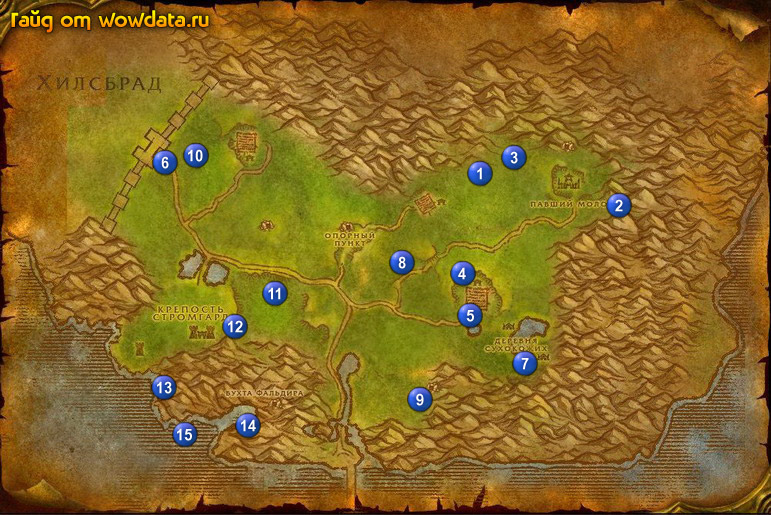

1) Начните <На вес золота>.
2) Используйте кристал 1 (62, 33) и начните <Пойманная принцесса>.
3) Идите на восток от 2 (80, 40). Тут будет дерево, за деревом следуйте по тропинке между гор в пещеру и бейте кобольтов для <Пойманная принцесса>, когда закончите собирать кристалы, то вы можете закончить этот квест в конце пещеры, использовав Радужные осколки, затем начать <Камни Обета>.
4) Пройдите на северо-запад от 3 (66, 30) и возмите [Резной ключ] в центре круга использовав камень.
5) Закончите <Новая чума зарождается?> 4 (60, 53), начните <Новая чума зарождается?>, если после этого вы увидите курьера – убейте его. Курьер ходит по дороге через всю локацию, начиная с фермы 5 (61, 61) и до 6 по дороге.
6) Бейте тролей около озера 7 (67, 69) для <На вес золота>, чтобы получить даггер вы должны бить охотников за головами (тоже троли) в пещере 7 (68, 74).
7) Идите в каменный круг 8 (52, 50) и возьмите [Громовой ключ] из камня.
8) Идите в и закончите <На вес золота>, затем начните <Оружие получше кулаков> у дварфа около наковальни.
9) Идите делайте <Оружие получше кулаков> - убейте Кор'греш Холодная Ярость в пещере 9 (53, 77), вернитесь обратно в лагерь, закончите квест и игнорируйте следующую часть.
10) Идите в каменный круг на западной стороне локации 10 (25, 30) и возьмите из камня [Огненный ключ].
11) Закончите <Камни Обета> в кругу 11 (36, 56), игнорируйте следующую часть.
12) Бегите на юго-запад отсюда, найдите путь который ведет за 12 (31, 64), идите вдоль стены к пещере (21, 75).
13) Плывите к кораблю 14 (31, 83).
14) Начните <Эй, там!>, затем закончите его рядом.
15) Начните <Поиски на глубине> у гоблина.
16) Идите к костру, начните <Затонувшие печали> и <Утонувшее сокровище>.
17) Делайте <Утонувшее сокровище>, сопровождая гнома в пещеру рядом. Закончите этот квест и начните <Утонувшее сокровище>.
18) Выдвигайтесь на юго-запад к затонувшим кораблям 15 (24, 84) и делайте там:
<Утонувшее сокровище> (используйте выданные очки, чтобы было удобнее), <Затонувшие печали> (наги) и <Поиски на глубине>.
19) Закончите <Поиски на глубине> в доках.
20) Затем закончите <Затонувшие печали> у костра и <Утонувшее сокровище>, начните
<Утонувшее сокровище>.
21) Закончите <Утонувшее сокровище> в доках и начните <Утонувшее сокровище>.
22) Отправляйтесь на поиски курьера и убейте его, если вы этого еще не сделали.
23) Идите закончите <Новая чума зарождается?> 4 (60, 53), начните <Новая чума зарождается?>, тут же закончите этот квест и начните <Новая чума зарождается?>.
24) Сопроводите эльфийку, и закончите квест (там где и начинали), затем начните <Новая чума зарождается?>. Фармите мобов пока вам не останется 3500 хр до 38 лвл. Можете сходить в рфд или в ульдаман.
25) Вернитесь по руне в Штормград
26) Закончите <Новая чума зарождается?> около гостиницы.
27) Летите в Стальгорн и выучите новые скиллы, затем летите в Гавань Менетил и сядьте на корабль в Пылевые топи.